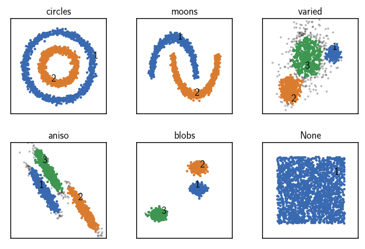

scikit-learn Toy data sets¶
Contents
1 Pre-requirements
1.1 Import dependencies
1.2 Notebook configuration
1.3 Package configuration
2 Data set generation
3 CNN clustering with data points as input
4 CNN clustering with pre-computed distances
5 CNN clustering with pre-computed neighbourhoods
Pre-requirements¶
Import dependencies¶
[10]:
import sys
import numpy as np
import matplotlib.pyplot as plt
import matplotlib as mpl
from sklearn import cluster # Forked at https://github.com/janjoswig/scikit-learn
from sklearn import datasets # For sklearn test data set creation
from sklearn.preprocessing import StandardScaler
import cnnclustering.cnn as cnn # CNN clustering
This notebook was created using Python 3.8.
[2]:
# Version information
print(sys.version)
3.8.3 (default, May 15 2020, 15:24:35)
[GCC 8.3.0]
Notebook configuration¶
[8]:
# Matplotlib configuration
mpl.rc_file(
"matplotlibrc",
use_default_template=False
)
[6]:
# Axis property defaults for the plots
ax_props = {
"xlabel": None,
"ylabel": None,
"xlim": (-2.5, 2.5),
"ylim": (-2.5, 2.5),
"xticks": (),
"yticks": (),
"aspect": "equal"
}
# Line plot property defaults
line_props = {
"linewidth": 0,
"marker": '.',
}
Optionally, clustering results can be nicely collected in a pandas data frame.
Package configuration¶
[6]:
# Configuration file found?
cnn.settings.cfgfile # If None, no file is provided
[31]:
# Display default settings
cnn.settings.defaults
[31]:
{'default_cnn_cutoff': '1',
'default_cnn_offset': '0',
'default_radius_cutoff': '1',
'default_member_cutoff': '2',
'default_fit_policy': 'conservative',
'float_precision': 'sp',
'int_precision': 'sp'}
Data set generation¶
To see the CNN clustering in action, let’s have a look at a handful of basic 2D data sets from scikit-learn (like from https://scikit-learn.org/stable/auto_examples/cluster/plot_cluster_comparison.html).
[2]:
# Data set generation parameters
np.random.seed(0)
n_samples = 2000
[3]:
# Data set generation
# circles
noisy_circles, _ = datasets.make_circles(
n_samples=n_samples,
factor=.5,
noise=.05
)
# moons
noisy_moons, _ = datasets.make_moons(
n_samples=n_samples,
noise=.05
)
# blobs
blobs, _ = datasets.make_blobs(
n_samples=n_samples,
random_state=8
)
# None
no_structure = np.random.rand(
n_samples, 2
)
# aniso
random_state = 170
X, y = datasets.make_blobs(
n_samples=n_samples,
random_state=random_state
)
transformation = [[0.6, -0.6], [-0.4, 0.8]]
aniso = np.dot(X, transformation)
# varied
varied, _ = datasets.make_blobs(
n_samples=n_samples,
cluster_std=[1.0, 2.5, 0.5],
random_state=random_state
)
[4]:
# Define cluster parameters
dsets = [ # "name", set, **parameters
('circles', noisy_circles, {
'radius_cutoff': 0.5,
'cnn_cutoff': 20,
'member_cutoff': 100,
'max_clusters': None
}),
('moons', noisy_moons, {
'radius_cutoff': 0.5,
'cnn_cutoff': 20,
'member_cutoff': 2,
'max_clusters': None
}),
('varied', varied, {
'radius_cutoff': 0.28,
'cnn_cutoff': 20,
'member_cutoff': 20,
'max_clusters': None
}),
('aniso', aniso, {
'radius_cutoff': 0.29,
'cnn_cutoff': 30,
'member_cutoff': 5,
'max_clusters': None
}),
('blobs', blobs, {
'radius_cutoff': 0.4,
'cnn_cutoff': 20,
'member_cutoff': 2,
'max_clusters': None
}),
('None', no_structure, {
'radius_cutoff': 0.5,
'cnn_cutoff': 20,
'member_cutoff': 1,
'max_clusters': None
}),
]
[9]:
# Plot the original data sets
fig, ax = plt.subplots(2, 3)
Ax = ax.flatten()
for count, (name, data, *_) in enumerate(dsets):
# Fit all datasets to the same value range
data = StandardScaler().fit_transform(data)
# Plot
Ax[count].plot(data[:, 0], data[:, 1], **line_props)
Ax[count].set(**ax_props)
Ax[count].set_title(f'{name}', fontsize=10, pad=4)
fig.subplots_adjust(
left=0, right=1, bottom=0, top=1, wspace=0.1, hspace=0.3
)

CNN clustering with data points as input¶
[24]:
# Cluster the sets and plot the result
fig, ax = plt.subplots(2, 3)
Ax = ax.flatten()
for count, (name, data, params) in enumerate(dsets):
# Fit all datasets to the same value range
data = StandardScaler().fit_transform(data)
clustering = cnn.CNN(points=data)
# Calculate neighbours on-the-fly
clustering.fit(**params, policy="conservative")
print()
# Plot
clustering.evaluate(ax=Ax[count], annotate_pos="random")
Ax[count].set(**ax_props)
Ax[count].set_title(f'{name}', fontsize=10, pad=4)
fig.subplots_adjust(
left=0, right=1, bottom=0, top=1, wspace=0.1, hspace=0.3
)
Execution time for call of fit: 0 hours, 0 minutes, 0.2897 seconds
--------------------------------------------------------------------------------
#points R C min max #clusters %largest %noise
2000 0.500 20 100 None 2 0.500 0.000
--------------------------------------------------------------------------------
Execution time for call of fit: 0 hours, 0 minutes, 0.3340 seconds
--------------------------------------------------------------------------------
#points R C min max #clusters %largest %noise
2000 0.500 20 2 None 2 0.500 0.000
--------------------------------------------------------------------------------
Execution time for call of fit: 0 hours, 0 minutes, 0.6569 seconds
--------------------------------------------------------------------------------
#points R C min max #clusters %largest %noise
2000 0.280 20 20 None 3 0.338 0.114
--------------------------------------------------------------------------------
Execution time for call of fit: 0 hours, 0 minutes, 0.3483 seconds
--------------------------------------------------------------------------------
#points R C min max #clusters %largest %noise
2000 0.290 30 5 None 3 0.319 0.050
--------------------------------------------------------------------------------
Execution time for call of fit: 0 hours, 0 minutes, 0.6493 seconds
--------------------------------------------------------------------------------
#points R C min max #clusters %largest %noise
2000 0.400 20 2 None 3 0.334 0.001
--------------------------------------------------------------------------------
Execution time for call of fit: 0 hours, 0 minutes, 0.2841 seconds
--------------------------------------------------------------------------------
#points R C min max #clusters %largest %noise
2000 0.500 20 1 None 1 1.000 0.000
--------------------------------------------------------------------------------

CNN clustering with pre-computed distances¶
[29]:
# Cluster the sets and plot the result
fig, ax = plt.subplots(2, 3)
Ax = ax.flatten()
for count, (name, data, params) in enumerate(dsets):
# Fit all datasets to the same value range
data = StandardScaler().fit_transform(data)
clustering = cnn.CNN(points=data)
clustering.calc_dist() # Pre-calculate distances from points
# Calculate neighbours on-the-fly
clustering.fit(**params, policy="conservative")
print()
# Plot
clustering.evaluate(ax=Ax[count], annotate_pos="random")
Ax[count].set(**ax_props)
Ax[count].set_title(f'{name}', fontsize=10, pad=4)
fig.subplots_adjust(
left=0, right=1, bottom=0, top=1, wspace=0.1, hspace=0.3
)
Execution time for call of fit: 0 hours, 0 minutes, 0.1107 seconds
--------------------------------------------------------------------------------
#points R C min max #clusters %largest %noise
2000 0.500 20 100 None 2 0.500 0.000
--------------------------------------------------------------------------------
Execution time for call of fit: 0 hours, 0 minutes, 0.1571 seconds
--------------------------------------------------------------------------------
#points R C min max #clusters %largest %noise
2000 0.500 20 2 None 2 0.500 0.000
--------------------------------------------------------------------------------
Execution time for call of fit: 0 hours, 0 minutes, 0.2057 seconds
--------------------------------------------------------------------------------
#points R C min max #clusters %largest %noise
2000 0.280 20 20 None 3 0.338 0.114
--------------------------------------------------------------------------------
Execution time for call of fit: 0 hours, 0 minutes, 0.1340 seconds
--------------------------------------------------------------------------------
#points R C min max #clusters %largest %noise
2000 0.290 30 5 None 3 0.319 0.050
--------------------------------------------------------------------------------
Execution time for call of fit: 0 hours, 0 minutes, 0.5806 seconds
--------------------------------------------------------------------------------
#points R C min max #clusters %largest %noise
2000 0.400 20 2 None 3 0.334 0.001
--------------------------------------------------------------------------------
Execution time for call of fit: 0 hours, 0 minutes, 0.1047 seconds
--------------------------------------------------------------------------------
#points R C min max #clusters %largest %noise
2000 0.500 20 1 None 1 1.000 0.000
--------------------------------------------------------------------------------
CNN clustering with pre-computed neighbourhoods¶
[35]:
# Cluster the sets and plot the result
fig, ax = plt.subplots(2, 3)
Ax = ax.flatten()
for count, (name, data, params) in enumerate(dsets):
# Fit all datasets to the same value range
data = StandardScaler().fit_transform(data)
clustering = cnn.CNN(points=data)
clustering.data.points.cKDTree() # Build search tree on points
clustering.calc_neighbours_from_cKDTree(params["radius_cutoff"])
clustering.fit(**params) # Fit from precomputed neighbourhoods
print()
# Plot
clustering.evaluate(ax=Ax[count], annotate_pos="random")
Ax[count].set(**ax_props)
Ax[count].set_title(f'{name}', fontsize=10, pad=4)
fig.subplots_adjust(
left=0, right=1, bottom=0, top=1, wspace=0.1, hspace=0.3
)
Execution time for call of fit: 0 hours, 0 minutes, 0.0118 seconds
--------------------------------------------------------------------------------
#points R C min max #clusters %largest %noise
2000 0.500 20 100 None 2 0.500 0.000
--------------------------------------------------------------------------------
Execution time for call of fit: 0 hours, 0 minutes, 0.0116 seconds
--------------------------------------------------------------------------------
#points R C min max #clusters %largest %noise
2000 0.500 20 2 None 2 0.500 0.000
--------------------------------------------------------------------------------
Execution time for call of fit: 0 hours, 0 minutes, 0.0123 seconds
--------------------------------------------------------------------------------
#points R C min max #clusters %largest %noise
2000 0.280 20 20 None 3 0.338 0.105
--------------------------------------------------------------------------------
Execution time for call of fit: 0 hours, 0 minutes, 0.0151 seconds
--------------------------------------------------------------------------------
#points R C min max #clusters %largest %noise
2000 0.290 30 5 None 3 0.320 0.046
--------------------------------------------------------------------------------
Execution time for call of fit: 0 hours, 0 minutes, 0.0104 seconds
--------------------------------------------------------------------------------
#points R C min max #clusters %largest %noise
2000 0.400 20 2 None 3 0.334 0.001
--------------------------------------------------------------------------------
Execution time for call of fit: 0 hours, 0 minutes, 0.0136 seconds
--------------------------------------------------------------------------------
#points R C min max #clusters %largest %noise
2000 0.500 20 1 None 1 1.000 0.000
--------------------------------------------------------------------------------